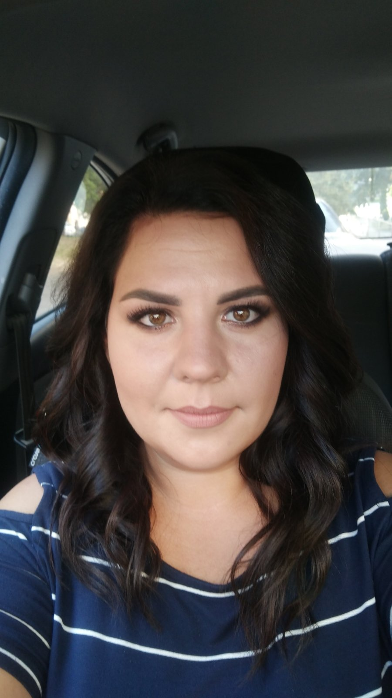

Educational program: EPAM DevOps online Spring 2021 EPAM
AWS services:
EC2
ECS
IAM
CodeCommit
VPC
Lightsail
Links of completed labs:
Launch a Linux Virtual Machine
with Amazon Lightsail
Store and Retrieve a File
with Amazon S3
Launch and configure a WordPress instance
with Amazon Lightsail
Store and Retrieve a File
with Amazon S3
Batch upload files to the cloud
to Amazon S3 using the AWS CLI
Deploy Docker Containers
on Amazon Elastic Container Service (Amazon ECS)